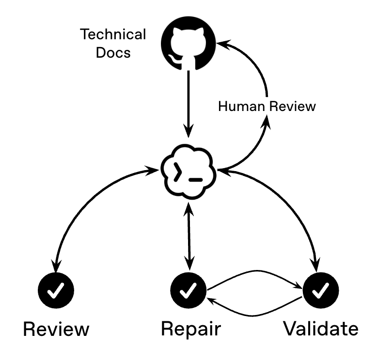
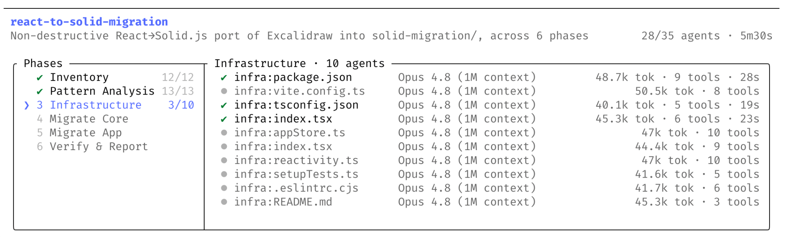
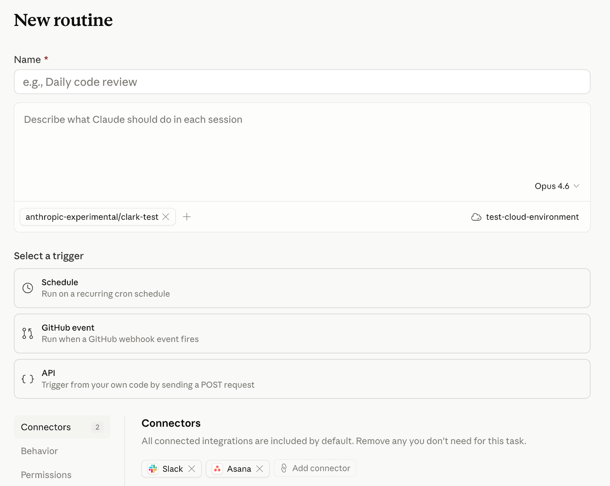

先把最容易讲偏的一件事讲清楚
我这次重新看了一轮官方资料后，最大的感受不是“agent 又升级了”，而是官方其实都写得很克制。无论是 Codex 还是 Claude Code，真正反复强调的都不是“多 agent 多酷”，而是你什么时候根本不该上多 agent。OpenAI 在 building agents 里明确说，多 agent 不是默认解，只有当任务彼此独立、工具很多、上下文很长、或者你真的需要并行时， 这套分工才值得上。换句话说，多 agent 不是高级感，而是管理成本值得时才开。
这也刚好解释了为什么很多人用 Codex 会卡住。不是模型不够强，而是方法还停在“问它一个问题，等它回一个答案”。 可你现实里的很多工作，根本不是一道题，而是一条链。链上有输入，有提取，有判断，有复核，有交付。你不给它拆， 它就只能在一个长上下文里硬撑；上下文一长，重点就散，返工就开始了。Claude Code 官方对上下文窗口这件事说得更直接： 上下文不是越多越好，它是最稀缺的管理资源。老板不是把所有信息全塞给下属，而是知道什么该常驻，什么该临时，什么该分流。 用 Codex 也是一样。
所以我现在更愿意把“会不会用 Codex”翻译成一句更实际的话：你会不会写项目单。项目单里至少要有五样东西。目标是什么， 输入是什么，不能碰什么，什么算做完，中间哪些地方必须停下来给你看。OpenAI 官方在 Codex prompting 和 prompt engineering 里其实已经把路标给出来了，重点从来不是玄学词，而是把身份、指令、例子、上下文、验证步骤和成功标准分开写。 这才是普通人最容易马上提效的地方。
多模型是角色分工，多 agent 是任务装配，老板思维是先定目标、再派工、最后验收。
官方资料对这条视频最有用的，不是概念，而是分层
这轮资料最值钱的一个地方，是把“AI 协作系统”拆出了层级。`AGENTS.md` 更像团队制度层，适合放每次都要遵守的规则， 比如 build/test 命令、目录约定、review 预期。`skills` 适合封装可复用工作流，不是一句提示词，而是一套说明、资源和可选脚本。 `MCP` 适合解决“模型看不到、碰不到”的外部世界问题，比如第三方文档、浏览器、Figma、GitHub。`hooks` 则更像执法层， 适合做命令前检查、权限确认、结果复核。`automation` 才是持续巡检层，适合定期跟进、同线程追踪或独立周期任务。
这套分层一旦讲清楚，视频就不需要再停在抽象概念上了。因为我们终于可以告诉观众：你不是非得一上来就搭完整系统。 如果你只是今天要把一条视频做出来，先写一个项目单，再开一条研究线和一条脚本线，已经够用了。如果你每周都在做类似内容， 那就把审校动作沉淀成 skill。如果你开始固定查文档、拉数据、对照输出，那就该上 MCP。如果你已经知道每次交付前都要做哪几步检查， 就把它变成 hook。换句话说，高手不是更会聊天，而是更会把临时做法沉淀成制度。

OpenAI
修复循环图最适合拿来讲“先做再验”
这张图很适合放到视频里讲闭环：不是写完就完，而是写完、验证、修、再验证。

Claude Code
这张图很适合拿来讲“并行不是热闹，是分流”
它能帮你把多 agent 的价值讲得更像组织运作，而不是多开几个聊天窗。

Claude Code
这张图适合讲“临时 prompt 和长期流程不是一回事”
它能自然引出：流程一旦重复，就应该沉淀成可复用规范，而不是每次重讲一遍。

Codex
官方主视觉适合做章节过渡和封面底图
它的作用不是给信息，而是帮整条视频建立一个统一的技术氛围和识别度。
更细一版的视频脚本
Scene 01 · 0:00 - 0:18
开场反差
口播重点：很多人不是不会用 Codex，而是还在用聊天思维解决本来应该调度的工作。画面用一个聊天框切成多条任务线。
Scene 02 · 0:18 - 0:36
把两个词说成人话
口播重点：多模型不是排行榜，多 agent 不是多开窗口。前者是角色分工，后者是任务装配。
Scene 03 · 0:36 - 0:56
老板思维的四要素
口播重点：目标、约束、验收、检查点。这里可以直接给一张项目单模板，让观众马上知道怎么写。
Scene 04 · 0:56 - 1:18
案例一进入：这条视频本身
口播重点：不是一句“帮我写脚本”，而是先起总控 prompt，把任务拆成资料研究、脚本、分镜、审校、工程接入。
Scene 05 · 1:18 - 1:40
为什么多 agent 在这里成立
口播重点：每条线只对一个交付负责。研究线出观点卡，脚本线写 12 场景，审校线只挑重复和空话，工程线只考虑 scene data 和 markers。
Scene 06 · 1:40 - 2:00
外化思考
口播重点：文案、分镜、思维导图、素材清单、时间轴不是附件，它们就是协作界面。这里适合用我们现有文件做蒙版动画。
Scene 07 · 2:00 - 2:18
案例二进入：群聊截图做采购预算
口播重点：这是最像普通办公室的脏活，碎、脏、容易漏，最适合讲清楚单 agent 为什么不够。
Scene 08 · 2:18 - 2:42
把重复性工作拆开
口播重点：先提取，再拼表，再查异常，再出摘要。这里要把“同类礼品归并、缺单价单列、总额复核”说得具体。
Scene 09 · 2:42 - 3:00
把 skill 和自动化放进来
口播重点：提取是重复性工作，异常检查适合沉淀成 skill，导出和周报适合自动化。不是每一步都该自动化。
Scene 10 · 3:00 - 3:18
再给一排日常场景
口播重点：会议纪要、招聘初筛、销售线索、报销核对、老板汇报、小红书选题表，都满足“输入乱、步骤碎、验收可写”。
Scene 11 · 3:18 - 3:40
重新定义提效
口播重点：不要只看生成速度，要看完成率、返工轮次和复核成本。多一次检查，少三轮返工，才是真提效。
Scene 12 · 3:40 - 4:00
结尾收束
口播重点：AI 多模型多 agent，不是让你更会聊天，而是让你更像一个会派工、会验收、会交付的小老板。
你剩下的实操素材，建议这样补
素材 01
真实 Codex App 操作录屏
这一块不要靠官图替代。你自己去跑一次项目单 prompt、一次研究线、一次审校线，录三段 6 到 10 秒的屏幕就够。
素材 02
案例一的文件证据
把观点卡、12 场景脚本、分镜手册、markers、scene data 各截一张。观众更容易相信文件链，而不是相信你嘴里说“我有流程”。
素材 03
案例二的输入和输出
至少准备四种画面：原始群聊截图、提取后的结构化文本、预算表、待确认清单。这样“提取-整理-审校-交付”会非常清楚。
素材 04
动图位怎么做
这轮我先把官方静态参考图接进页面了。真正最有代入感的动图，建议你自己录 Codex App 的滚动、分工、回审和文件落地过程，再转成短 loop。
一轮审查提升系统，专门防空话和 AI 味
这轮我把我们现有文件里的口吻原则也并进来了。审查时先别急着润色，先删。任何一句话，如果听起来像在显得重要，而不是在提供信息，就先判它可疑。 我现在会用五个问题去过一遍。第一，这句话有没有具体动作。第二，这句话有没有具体产物。第三，这句话是不是普通打工人真会遇到的压力。第四， 这句话是不是说了跟上一句同一件事。第五，这句话如果删掉，信息量会不会几乎不变。如果答案都很虚，这句就该砍。
另外还有一组特别容易冒出来的无效词，我会优先替换掉：比如“高效协同”“闭环能力”“全面赋能”“范式升级”“深度重构”“认知跃迁”“极大提升”。 这些词的问题不是绝对不能用，而是它们太喜欢先显得厉害，再慢慢找信息。更好的写法，是把它们换成具体结果。别说“高效协同”，就说“研究线先出观点卡， 脚本线再根据观点卡写 12 场景”。别说“闭环”，就说“写完后必须过一次查重复、查缺项、查总额的审校任务”。这样一换，AI 味会立刻少很多。
你现在只负责审查，不负责重写整稿。
请逐段检查这版文案：
1. 有没有看起来重要、其实没提供信息的句子
2. 有没有抽象判断后面缺少具体动作或具体产物
3. 有没有不属于普通打工人真实压力的空泛表达
4. 有没有重复解释同一件事
5. 有没有可以直接换成更口语、更具体说法的 AI 味词
输出格式：
1. 原句
2. 问题类型
3. 为什么这里会掉传播力
4. 建议删掉 / 压缩 / 改写成什么方向这篇文章用到的官方资料
- OpenAI · Codex Prompting
- OpenAI · Codex Subagents
- OpenAI · AGENTS.md Guide
- OpenAI · Skills
- OpenAI · MCP
- OpenAI · Advanced Config / Hooks
- OpenAI · Automations
- OpenAI · Building Agents
- OpenAI · Reasoning Best Practices
- OpenAI · Prompt Engineering
- Claude Code · How Claude Code Works
- Claude Code · Best Practices
- Claude Code · Sub-agents
- Claude Code · Features Overview
- Claude Blog · Dynamic Workflows
- Claude Blog · Routines